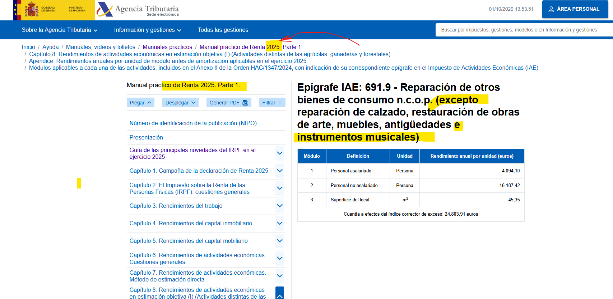

Cuaderno de taller
La reparación artesanal ante el IAE
Documento de trabajo sobre el encuadre fiscal de la reparación independiente de instrumentos de viento-madera.
El presente es un documento de trabajo académico-profesional, no un escrito contencioso. El objetivo sería abrir una discusión técnica sobre cómo clasificar y reconocer una actividad real —la reparación artesanal independiente de instrumentos de viento-madera— que hoy se ejerce, pero cuya descripción fiscal y formativa no está tan nítida como la de fabricación o comercio.
Propósito:
- Anexo de la memoria de emprendimiento.
- Documento de debate en escuelas de luthería y formación profesional.
- Base para un artículo o nota técnica en revistas del sector.
Documento de trabajo
La reparación artesanal independiente de instrumentos musicales ante el IAE
Análisis preliminar para la discusión profesional y académica
Versión: 0.1 — Documento de trabajo
Fecha: 30 de septiembre de 2026
Ámbito: España / Comunidad de Madrid
Destinatarios: profesionales de luthería, escuelas de formación, asociaciones del sector, administraciones competentes
Naturaleza: análisis técnico-académico, sin pretensión de asesoramiento tributario individual ni de litigio.
Curated by RS Montalvo
1. Propósito del documento
Este documento tiene como finalidad abrir una discusión profesional y académica sobre el encuadre de la reparación artesanal independiente de instrumentos musicales de viento-madera en el sistema de clasificación del Impuesto sobre Actividades Económicas —IAE—.
No se trata de denunciar una irregularidad, sino de:
- Describir una actividad real y consolidada en el ecosistema musical español.
- Identificar dificultades prácticas de clasificación en las Tarifas del IAE.
- Plantear preguntas técnicas que merezcan aclaración administrativa y debate profesional.
- Contribuir a una mayor coherencia entre la realidad del oficio, la formación profesional y el marco fiscal-censal.
El análisis se centra en la reparación artesanal de instrumentos de viento-madera —saxofón, clarinete, flauta travesera, oboe y fagot— realizada por talleres independientes que no fabrican instrumentos ni comercian con ellos.
2. Contexto profesional
2.1. El oficio de luthería de reparación
En España existe una comunidad profesional de luthiers especializados en el mantenimiento, reparación, regulación y restauración funcional de instrumentos de viento-madera. Estos profesionales:
- Atienden a estudiantes, músicos profesionales, bandas, orquestas, conservatorios y escuelas de música.
- Prolongan la vida útil de los instrumentos mediante intervenciones técnicas especializadas.
- Contribuyen a la sostenibilidad del sector musical, evitando el descarte prematuro de instrumentos por problemas mecánicos o de estanqueidad.
- Aportan conocimiento técnico sobre materiales, mecanismos, acústica, ergonomía y conservación.
Muchos de estos talleres se definen como artesanos: su trabajo tiene una intervención personal decisiva, un control directo del proceso y un resultado individualizado para cada instrumento.
2.2. Formación profesional y certificación ARTG0212
El sistema de formación profesional reconoce esta especialidad a través del certificado profesional:
ARTG0212 — Mantenimiento y reparación de instrumentos de viento-madera
Este certificado, de nivel 2, describe una cualificación oficial vinculada a:
- Detección de anomalías en instrumentos de viento.
- Desmontaje y preparación para reparación o mantenimiento.
- Sustitución y mantenimiento de muelles planos y de aguja.
- Ajuste de mecanismos en viento-madera.
- Montaje de mecanismos, colocación de zapatillas y equilibrado del sistema mecánico.
- Unidades específicas para clarinete y saxofón, flauta, oboe y fagot.
- Regulación final de mecanismos.
La existencia de este certificado profesional evidencia que la Administración reconoce el oficio como una especialidad técnica diferenciada dentro de la familia de Artes y Artesanías.1 2
Sin embargo, la formación oficial no resuelve por sí sola la cuestión de cómo se clasifica fiscalmente la actividad cuando se ejerce de manera independiente, sin fabricación ni comercio.

3. Actividad objeto de análisis
3.1. Descripción económica
La actividad estudiada puede describirse así:
Prestación artesanal de servicios de diagnóstico, mantenimiento, reparación, regulación y restauración funcional de instrumentos musicales de viento-madera pertenecientes a terceros, sin fabricación de instrumentos, sin comercialización de instrumentos y sin venta habitual de accesorios o repuestos.
Las operaciones típicas incluyen:
- Recepción, identificación y custodia del instrumento.
- Diagnóstico de anomalías mecánicas, estructurales, de estanqueidad, regulación o uso.
- Desmontaje, limpieza técnica y preparación.
- Sustitución y ajuste de zapatillas, muelles, corchos, fieltros, tornillería y elementos mecánicos.
- Corrección de holguras, alineación, sincronismos, topes y regulación de mecanismos.
- Reparación funcional de grietas, uniones, elementos de madera y mecanismos.
- Pruebas de estanqueidad, respuesta mecánica y funcionamiento final.
- Entrega con presupuesto, factura, garantía y recomendaciones de mantenimiento.
3.2. Delimitación expresa
Quedan fuera del análisis:
- Talleres que fabrican instrumentos completos.
- Talleres que fabrican boquillas, barriletes, cuerpos, llaves o accesorios para venta.
- Comercios minoristas de instrumentos musicales y accesorios.
- Servicios técnicos de grandes superficies o cadenas que combinan venta y reparación.
- Restauración histórico-artística de bienes protegidos por normativa de patrimonio.
- Reparación de instrumentos de viento-metal, cuerda, teclado, percusión o electrónica.
El foco está puesto en el taller independiente de reparación, cuyo modelo de negocio es la prestación de servicios técnicos especializados sobre instrumentos de terceros.
4. Marco normativo del IAE
4.1. Carácter universal del impuesto
El IAE grava el mero ejercicio, en territorio nacional, de actividades empresariales, profesionales o artísticas, con independencia de que figuren o no de manera expresa en las Tarifas. La jurisprudencia constitucional y contencioso-administrativa ha subrayado este carácter amplio y la función censal del impuesto.34
La AEAT recuerda que toda actividad económica desarrollada en España debe clasificarse en uno o varios grupos o epígrafes de las Tarifas del IAE.5
4.2. Tarifas e Instrucción
Las Tarifas e Instrucción del IAE proceden del Real Decreto Legislativo 1175/1990, de 28 de septiembre. El sistema se organiza en:
- Secciones: actividades empresariales, profesionales y artísticas.
- Grupos y epígrafes.
- Cuotas y reglas de clasificación.
- Instrucción con reglas de interpretación.
La Regla 8.ª de la Instrucción establece que las actividades no especificadas en las Tarifas deben clasificarse provisionalmente en el grupo o epígrafe de actividades “no clasificadas en otras partes” al que se asemejen por su naturaleza; si ello no fuera posible, se acudirá a la actividad más semejante.6
Esta regla es clave para el análisis, porque la reparación independiente de instrumentos musicales no aparece identificada en las fuentes examinadas mediante un epígrafe literal y autónomo equivalente a “reparación de instrumentos musicales”.
5. Epígrafes relevantes examinados
5.1. Epígrafe 691.9
La denominación oficial del epígrafe 691.9 es:
“Reparación de otros bienes de consumo n.c.o.p. (excepto reparación de calzado, restauración de obras de arte, muebles, antigüedades e instrumentos musicales).”
Esta exclusión aparece en documentación de la AEAT y en disposiciones publicadas en el BOE relativas al régimen de estimación objetiva.789
La exclusión plantea la siguiente cuestión: si la reparación de instrumentos musicales queda fuera del 691.9, ¿dónde debe clasificarse cuando no hay fabricación ni comercio?
5.2. Epígrafe 492.4
El epígrafe 492.4 se refiere a:
“Instrumentos de viento”.
Se encuadra dentro del grupo dedicado a la fabricación de instrumentos musicales.1011
Este epígrafe sería adecuado para un taller que fabrica instrumentos de viento, pero no describe fielmente una actividad limitada a la reparación de instrumentos de terceros.
5.3. Grupo 657
El grupo 657 se refiere al comercio al por menor de instrumentos musicales y sus accesorios. Las referencias de tarifas contemplan la posibilidad de reparación manual de instrumentos vendidos por el propio comerciante.12
Este grupo no se ajusta al taller independiente de reparación porque:
- No existe actividad de comercio minorista.
- No se venden instrumentos, accesorios ni repuestos.
- Los instrumentos reparados pertenecen a clientes y no al taller.
6. Núcleo de la dificultad de clasificación
La dificultad puede expresarse en forma de preguntas técnicas:
- ¿Existe un epígrafe IAE que describa de forma literal la reparación independiente de instrumentos musicales? Las fuentes examinadas no muestran un epígrafe con esa denominación expresa.
- ¿Puede aplicarse el 691.9 a pesar de la exclusión literal de instrumentos musicales? La exclusión sugiere que la reparación de instrumentos musicales no forma parte del núcleo típico de ese epígrafe.
- ¿Corresponde clasificar al reparador independiente en el grupo de fabricación de instrumentos de viento? Sería discutible si no hay fabricación efectiva de instrumentos o piezas comercializables.
- ¿Es adecuado el grupo de comercio con reparación accesoria? No lo es si no hay venta de instrumentos ni de accesorios.
- ¿Cómo debe aplicarse la Regla 8.ª de la Instrucción a esta actividad? La regla permite una clasificación provisional en la actividad n.c.o.p. o más semejante, pero no indica automáticamente cuál es esa actividad en este caso.
Estas preguntas no buscan impugnar el sistema, sino identificar puntos que merecen aclaración administrativa y debate profesional.
7. Hipótesis de clasificación
Hipótesis A: 691.9 por analogía
Esta hipótesis considera que la reparación de instrumentos musicales podría encuadrarse en el 691.9 por analogía, dado que se trata materialmente de reparar un bien mueble de consumo perteneciente a terceros.
Argumentos a favor
- Coincide la naturaleza de servicio de reparación.
- No hay fabricación ni comercio.
- La Regla 8.ª permite acudir a actividades n.c.o.p. o semejantes cuando falta un epígrafe específico.6
Argumentos en contra
- La denominación del 691.9 excluye expresamente instrumentos musicales.87
- La exclusión puede reflejar una voluntad normativa de no integrar la reparación musical en ese epígrafe.
- No existe, en las fuentes examinadas, un epígrafe alternativo expreso para la reparación independiente de instrumentos musicales.
Valoración
Hipótesis defendible únicamente mediante interpretación analógica o aplicación de la Regla 8.ª, pero no como solución automática sin criterio administrativo aplicable.
Hipótesis B: actividad más semejante según Regla 8.ª
Esta hipótesis parte de que la reparación independiente de instrumentos musicales no está especificada de manera autónoma y, por tanto, debe clasificarse provisionalmente en la actividad más semejante.
Argumentos a favor
- El IAE alcanza actividades aunque no figuren expresamente en Tarifas.43
- La Regla 8.ª contempla actividades no especificadas.6
- El proyecto no encaja literalmente ni en fabricación ni en comercio.
Cuestión pendiente
La regla no decide por sí sola cuál es la actividad más semejante; requiere valoración de hechos concretos por el órgano competente o mediante interpretación tributaria fundada.
Hipótesis C: clasificación vinculada a fabricación
Esta hipótesis consistiría en encuadrar al reparador independiente en el grupo de fabricación de instrumentos de viento.
Argumentos a favor
- Los instrumentos musicales se agrupan en las Tarifas industriales de fabricación.
- La reparación puede requerir conocimientos, materiales y procesos próximos a la luthería de construcción.
Argumentos en contra
- El supuesto de hecho no incluye fabricación.
- La clasificación por actividad industrial de fabricación no representa fielmente una prestación de servicios de reparación.
- Podría generar una desalineación entre el alta declarada, la memoria del proyecto, el objeto de subvenciones, la actividad efectiva y la facturación.
Valoración
No es la hipótesis recomendada para el modelo de negocio definido.
Hipótesis D: clasificación como comercio con reparación accesoria
Esta hipótesis utilizaría el grupo de comercio de instrumentos musicales.
Argumentos en contra decisivos
- No hay comercio de instrumentos.
- No se venden accesorios.
- No se reparan instrumentos previamente vendidos por el taller.
- Sería una clasificación que no representa la actividad real.
Valoración
No recomendable para este proyecto.
8. Implicaciones para el ecosistema profesional
8.1. Para los talleres de reparación
Una clasificación poco clara puede tener efectos prácticos:
- Dificultad para justificar coherencia entre memoria de proyecto, alta censal y solicitud de ayudas.
- Incertidumbre sobre el régimen de IRPF aplicable.
- Riesgo de correcciones censales posteriores.
- Dificultad para comunicar el modelo de negocio a entidades financieras o administraciones.
8.2. Para las escuelas de formación
Las escuelas que imparten ARTG0212 y otras formaciones de luthería podrían considerar:
- Incluir en sus programas un módulo sobre “clasificación fiscal y administrativa de la actividad de luthería”.
- Fomentar la colaboración con asesorías fiscales para ofrecer orientación a alumnos que quieran emprender.
- Promover la realización de consultas vinculantes colectivas o guías sectoriales.
8.3. Para las asociaciones del sector
Las asociaciones profesionales podrían:
- Recoger casos reales de talleres de reparación y sus dificultades de clasificación.
- Promover mesas de trabajo con administraciones competentes.
- Elaborar guías de buenas prácticas para el alta y la facturación de servicios de reparación.
8.4. Para las administraciones
Desde una perspectiva de mejora regulatoria, podría valorarse:
- La conveniencia de aclarar, mediante instrucción o criterio administrativo, el epígrafe aplicable a la reparación independiente de instrumentos musicales.
- La posibilidad de reconocer explícitamente esta actividad en futuros trabajos de actualización de Tarifas o guías sectoriales.
- La coordinación entre formación profesional, artesanía y clasificación fiscal para evitar vacíos de reconocimiento práctico.
9. Preguntas abiertas para la discusión profesional
El documento plantea las siguientes preguntas a la comunidad profesional y académica:
- ¿Cómo clasifican actualmente sus actividades los talleres independientes de reparación de instrumentos de viento-madera en España?
- ¿Han encontrado dificultades prácticas en su relación con AEAT, gestorías, entidades financieras o administraciones autonómicas y locales?
- ¿Consideran que la reparación artesanal independiente de instrumentos musicales debería tener un reconocimiento fiscal más nítido y diferenciado de la fabricación y el comercio?
- ¿Qué criterios deberían tenerse en cuenta para definir la “actividad más semejante” en aplicación de la Regla 8.ª del IAE?
- ¿Sería útil que las escuelas de formación y las asociaciones del sector promovieran una guía sectorial o una consulta vinculante colectiva sobre esta cuestión?
- ¿Existen experiencias comparadas en otros países de la UE que puedan servir de referencia para un mejor encaje de esta actividad?
10. Propuesta de líneas de trabajo futuro
A partir de este documento de trabajo, se proponen las siguientes líneas de trabajo:
- Recogida de casos reales
Recopilar experiencias de talleres de reparación en distintas comunidades autónomas, identificando epígrafes utilizados, dificultades encontradas y soluciones aplicadas. - Elaboración de una guía sectorial
Redactar una guía práctica para talleres de luthería de reparación, con modelos de alta, facturas, condiciones de servicio y recomendaciones de cumplimiento. - Consulta vinculante colectiva o sectorial
Valorar la posibilidad de que una asociación o escuela promueva una consulta vinculante que represente al sector, con descripción detallada de la actividad. - Módulo formativo específico
Incorporar en los programas de ARTG0212 y otras formaciones de luthería un módulo sobre “gestión y fiscalidad básica del taller independiente de reparación”. - Publicación académica y divulgativa
Publicar versiones adaptadas de este análisis en revistas de música, artesanía, formación profesional y fiscalidad de pymes, siempre con carácter no contencioso y constructivo.
11. Posición institucional recomendada para proyectos de emprendimiento
Para proyectos de emprendimiento, memorias de subvención o solicitudes de reconocimiento artesanal, se recomienda utilizar una formulación prudente como la siguiente:
La actividad económica proyectada consiste en la prestación artesanal de servicios de mantenimiento, reparación, regulación y restauración funcional de instrumentos musicales de viento-madera pertenecientes a terceros, sin fabricación de instrumentos, sin comercialización de instrumentos y sin venta habitual de accesorios o repuestos.
Dada la ausencia de un epígrafe IAE que describa de forma literal la reparación independiente de instrumentos musicales, y la exclusión expresa de dichos instrumentos en la denominación del epígrafe 691.9, se solicitará validación de la clasificación censal aplicable ante la Administración tributaria competente, de conformidad con las reglas de clasificación de las Tarifas del IAE.
La clasificación finalmente declarada será la que resulte de la respuesta administrativa, de la instrucción censal aplicable o del criterio profesional tributario formalmente documentado.
Esta formulación permite avanzar con el proyecto sin afirmar conclusiones tributarias no confirmadas.
12. Bibliografía y fuentes normativas citadas
- Real Decreto Legislativo 1175/1990, de 28 de septiembre, por el que se aprueban las Tarifas y la Instrucción del Impuesto sobre Actividades Económicas.1012
- Ley Reguladora de las Haciendas Locales, texto refundido aprobado por Real Decreto Legislativo 2/2004, de 5 de marzo, especialmente artículo 78.4
- Sentencia del Tribunal Constitucional 96/2013 y Sentencia del Tribunal Constitucional 210/2012, sobre naturaleza y estructura del IAE.133
- Documentación de la AEAT sobre epígrafe 691.9 y módulos aplicables.97
- Certificado profesional ARTG0212 — Mantenimiento y reparación de instrumentos de viento-madera.21
- Normativa de la Comunidad de Madrid sobre Registro de Actividades Artesanas y empresas artesanas.14
13. Nota final
Este documento se ofrece como contribución al debate profesional y académico sobre la reparación artesanal de instrumentos musicales en España. No constituye asesoramiento tributario individual ni pretende sustituir la consulta a profesionales cualificados o a la Administración competente.
Se invita a profesionales, escuelas, asociaciones y administraciones a compartir observaciones, casos prácticos y propuestas de mejora, con el fin de fortalecer el reconocimiento y la viabilidad de esta especialidad técnica dentro del ecosistema musical y artesanal español.
- Empleo y formacion en Castilla La Mancha, Mantenimiento y reparación de instrumentos de viento-madera
- https://www.cualifica2.es/certificado/ART/Artes-y-artesania/ARTG/Fabricacion-y-mantenimiento-de-instrumentos-musicales/ARTG0212/Mantenimiento-y-Reparacion-de-Instrumentos-de-Viento-Madera
- https://www.boe.es/buscar/doc.php?id=BOE-A-2014-217
- https://www.boe.es/buscar/doc.php?id=BOE-A-2018-16721
- https://sede.agenciatributaria.gob.es/Sede/declaraciones-informativas-otros-impuestos-tasas/impuesto-sobre-actividades-economicas/que-actividades-debo-declarar.html
- https://portalnormativo.es/articolo/real-decreto-legislativo-1175-1990-de-28-de-septiembre-por-el-que-se-aprueban-la/regla-8
- https://sede.agenciatributaria.gob.es/Sede/ayuda/manuales-videos-folletos/manuales-practicos/irpf-2021/apendice/epigrafe-iae-691_9-reparacion-otros-n_c_o_p_.html
- https://www.boe.es/buscar/pdf/2019/BOE-A-2019-17252-consolidado.pdf
- https://www.boe.es/buscar/act.php?id=BOE-A-2017-13896
- https://www.boe.es/buscar/act.php?id=BOE-A-1990-23930
- https://www.hacienda.gob.es/DocLeyes/onlinelt/c16.02.1990.09.28.rdleg.1175.cd.tarifas.iae_te_23186.htm
- https://www.hacienda.gob.es/DocLeyes/ONLINELT/C16.02.1990.09.28.rdleg.1175.cd.tarifas.iae_te_23186.htm
- https://www.boe.es/buscar/doc.php?id=BOE-A-2012-15091
- https://sede.comunidad.madrid/node/220222